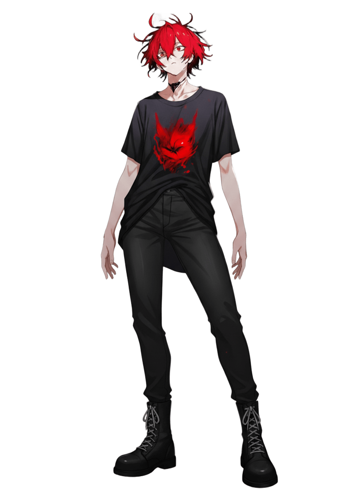

性格
仲間想いの激情家。一時的な感情の爆発に身を任せ、短絡的に行動する。しかしもともとの性格は慎重で落ち着いたものであり、現在のそれは「演じている」という方が近い。過去にあった事件から、自身の元の性格では何一つ成し遂げられないという結論に至り、現在の人格を後天的に作り上げたのである。
仕事について
滲緑街から依頼を受け、各地に爆弾テロを起こしている。小さな家屋の爆破から、街全体を巻き込むものまで規模は様々。
過去
スラム街の出身で、ナナやミミの兄貴分として彼女たちの面倒を見ていた。自分が空腹でも彼女たちのために食料を分け与えるくらいには大切にしていた。スラムは彼ら子供が生き延びるには険しい環境だったが、それでも互いに手を取り合いながら懸命に日々を生きていたのである。
あの日、ナナが裏切る日までは彼の人生は幸福に満ちていた。ナナのせいで全てが失われ、彼は昔の自分を仲間の死体と一緒に焼き捨てた。それからの人生は、ナナを殺すためだけに存在している。
能力
非常に高い身体能力を持つ。武器がなくとも殴り合いだけで敵を制圧できる技能は、長いスラムの生活の中で培ったものである。また、呑紅街のすべてのエリアの構造や地下のつながりなども知り尽くしており、最適な脱出経路などを組むことに長けている。